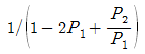
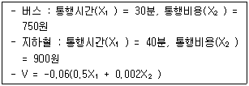
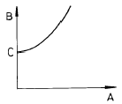
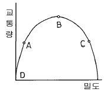
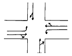
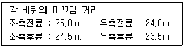

교통기사 (2004-09-05 기출문제)
1과목: 교통계획
1. 모집단의 개체가 똑같은 확률로 뽑혀지도록 모집단에서 추출하는 방법은?
- 단순확률 표본 설계
- 층화확률 표본 설계
- 집락확률 표본 설계
- 비확률 표본 설계
(정답률: 알수없음)

2. 하나의 Trip에는 몇개의 Trip end가 있는가?
- 1개
- 2개
- 3개
- 4개
(정답률: 알수없음)
3. 통행실태 또는 교통시설 조사를 위한 존의 설정방법으로 적합하지 않은 것은?
- 존의 경계를 행정구역과 가능한 한 일치시킨다.
- 각존은 가능한 한 동질적인 토지이용이 되도록한다.
- 존별 통행발생량이 가능한 한 균등하도록 한다.
- 간선도로는 가능한 한 존 경계내에 포함시킨다.
(정답률: 알수없음)
4. 한 통근자가 집에서 택시로 지하철역까지 간후 지하철로 갈아타고 직장에 도착했다. 이 경우 목적통행수(Linked Trip)는 얼마인가?
- 1
- 1.5
- 2
- 3
(정답률: 알수없음)
5. 이상적인 조건에서 양방향 2차로 도로의 용량은?
- 1000 승용차/시/양방향
- 2000 승용차/시/양방향
- 3200 승용차/시/양방향
- 4000 승용차/시/양방향
(정답률: 알수없음)
6. D1 = 20 - 3P1 + 4P2의 교통수요모형에서 D1은 택시교통수요 P1은 택시통행비용, P2는 지하철통행비용이다. 이 경우 지하철통행비용에 대한 택시교통수요의 교차탄력성은?
- (-3)(4P2)
- 4P2/(20-3P1+4P2)

- 4
(정답률: 알수없음)
7. 통행 발생 모형중의 하나로서 통행발생량과 같은 종속변수를 소득이나 자동차 보유대수등의 설명 변수들에 의해 교차분류시켜 도출해 내는 단순하고 이해하기 쉬운 모형은?
- 로짓모형
- 카테고리분석법
- 다중회귀분석법
- 프라타법
(정답률: 알수없음)
8. 개별행태 모형은 교통사업의 영향을 행태적인 측면에서 접근하여 파라메타를 추정하는 방법이다. 다음 중 개별행태 모형의 분석방법이 아닌 것은?
- 회귀분석법
- 로짓모형
- 중력모형
- 프로빗모형
(정답률: 알수없음)
9. 다음 중 교통체계관리기법(TSM)의 범주에 들지 않는 것은?
- 출퇴근시간의 시차제운용에 의한 첨두시 집중현상완화
- 버스전용차로의 설치
- 도시전철망의 집중적 확충
- 신호현시방법의 최적화
(정답률: 알수없음)
10. 공동배차제(버스회사)의 유형으로 적합치 않는 것은?
- 노선공동관리
- 수입공동관리
- 차량공동관리
- 인원공동관리
(정답률: 알수없음)
11. 시간가치(value of Time)는 교통시설 투자의 타당성 분석에서 매우 중요하다. 다음 중 시간가치를 산출하는 접근방법에서 근로와 여가활동중에서 선택의 문제로 접근하는 방법은?
- 소득접근방법
- 비용접근방법
- 기회비용 접근방법
- 여가비용 접근방법
(정답률: 알수없음)
12. 보행자 도로의 주요 효과척도로 거리가 먼 것은?
- 보행교통류율
- 보행속도
- 보행이용노폭
- 보행점유공간
(정답률: 알수없음)
13. 다음 중 교통 수단선택에 영향을 미치는 요인으로서 적합성이 낮은 자료는?
- 소득등 개인의 사회 경제적 특성자료
- 평면선형등 도로의 기하구조 특성자료
- 통행시간등 교통수단의 특성자료
- 정류장까지의 거리등 지역의 교통특성자료
(정답률: 알수없음)
14. 교통수요예측기법 중 집계형모형의 변수로 사용 되는 것은?
- 개인의 통행수
- 개인의 목적수
- 가구의 이용수단
- 평균 가구특성
(정답률: 알수없음)
15. 도시 전체면적은 600㎞2이며, 가구수가 400만이고 승용차수가 100만대이며, 인구가 1,100만인 도시의 도시통행계수(UTF : Urban Travel Factor)값은?
- 61.5
- 50.2
- 31.3
- 73.3
(정답률: 알수없음)
16. 구체적인 목적을 가진 공간상의 일방향 움직임으로 승객이나 화물이 목적지에서 활동을 위해 출발지에서 출발하여 목적지에 도달하는 행위의 한 단위를 의미하는 것은?
- 교통량(volume)
- 통행(trip)
- 교통(transportation)
- 통행량(travel)
(정답률: 알수없음)
17. 조사대상지역 밖에 출발지 혹은 목적지를 가진 통행을 조사하는 것으로, 주요 지점에서 조사대상지역으로 유입-유출하는 차량을 조사하는 방법을 무엇이라 하는가?
- 차량 번호판 조사
- 폐쇄선 조사
- 스크린 라인 조사
- 여객 통행 실태 조사
(정답률: 알수없음)
18. 로짓모형을 이용한 교통수단선택모형의 추정결과 다음과 같은 효용함수가 산정되었을 때 대중교통 수단분담율은?

- 버스 : 57.9%, 지하철 : 42.1%
- 버스 : 42.1%, 지하철 : 57.9%
- 버스 : 47.9%, 지하철 : 52.1%
- 버스 : 47.9%, 지하철 : 57.9%
(정답률: 알수없음)
19. 동시환승시스템 (Timed-Transfer System)에 대한 설명 중 맞지 않는 것은?
- 배차간격이 긴 노선간에 적절히 적용할 수 있는 시스템이다.
- 이용자들의 통행시간 단축을 가져올 수 있다.
- 환승 지점과 적절한 환승 센터가 필요하다.
- 고밀도 도시지역의 버스 네트웍에 많이 적용되고 있다.
(정답률: 알수없음)
20. 방사형 대중교통 노선망(Radial Transit Line)의 노선 형태로 인한 특징적인 단점은?
- 노선의 도심 집중으로 교통혼잡을 야기 할 수 있다.
- 잦은 환승으로 인한 승객의 불편과 대기시간의 증가를 가져온다.
- 노선 망이 복잡하여 이용자에게 혼란을 초래한다.
- 외곽으로부터 도심까지의 통행거리가 상대적으로 길다.
(정답률: 67%)
2과목: 교통공학
21. 교통량이 180(대/시)라고 한다. 한 시간내에 도착하는 자동차 대수가 poisson 분포를 따른다고 가정할때, 1분간에 4대의 자동차가 도착할 확률은 얼마인가?
- 0.101
- 0.147
- 0.168
- 0.202
(정답률: 알수없음)
22. 어느 도로구간에서 30분 동안 교통량을 측정한 결과 1,000대가 관측되었다. 이때 평균 차두시간은?
- 1.4초/대
- 1.6초/대
- 1.8초/대
- 2.0초/대
(정답률: 알수없음)
23. 편도 4차로도로에서 편도 교통량이 7800pcph이고 평균속도가 40km/h이었다. 이때의 밀도와 차간시간 (Time Gap)을 계산하면? (평균차량의 길이는 4m이다.)
- 52.32 대/km, 1.75초
- 48.75 대/km, 1.84초
- 48.75 대/km, 1.49초
- 52.32 대/km, 1.92초
(정답률: 알수없음)
24. 차량속도가 40㎞/hr 인 교차로에서 차량탐지기가 40m 전방에 설치된 반감응식(semi-actuated)교통신호등의 단위 연장 시간(unit extension)으로 적절한 값은? (단, 차량이 정지선에 도착하였을 때 황색신호가 시작되도록 설계한다.)
- 3.1초
- 3.6초
- 4.1초
- 4.6초
(정답률: 알수없음)
25. 도로상의 일정구간을 주행하는 교통류를 3가지 종류의 차량으로 구분할 수 있다. 즉 30km/시로 주행하는 차량들, 40km/시로 주행하는 차량들, 50km/시로 주행하는 차량들로 구분된다. 각각의 속도로 주행하는 차량들의 교통량이 각각 100대/시, 200대/시, 50대/시일 때 전체 교통류의 시간 평균속도는?
- 36.9 km/시
- 43.8 km/시
- 41.2 km/시
- 38.6 km/시
(정답률: 알수없음)
26. 연속교통류의 밀도, 속도, 교통량, 통행시간 관계의 다음 그림에서 표기가 옳은 것은?

- A = 교통류율, B = 속도, C = 임계속도
- A = 밀도, B = 교통량, C = 임계교통량
- A = 밀도, B = 통행시간, C = 자유류 상태의 통행시간
- A = 교통류율, B = 밀도, C = 임계밀도
(정답률: 알수없음)
27. 다음 중 일반적으로 설계시간 교통량으로 사용되는 것은 무엇인가?
- 연중 30번째 많은 시간당 교통량
- 연 평균 일일 교통량 ÷ 12
- 첨두시 교통량
- 연간 교통량
(정답률: 알수없음)
28. 지역의 구분에 따른 설계시간 계수(K)를 바르게 제시한 것은?
- 도시 0.15, 지방 0.09
- 도시 0.09, 지방 0.15
- 도시 0.⑤, 지방 0.08
- 도시 0.08, 지방 0.⑤
(정답률: 알수없음)
29. PIEV 시간은 교통시설 설계에서 대단히 중요한 요소이다. 도로설계에 사용되는 기준으로서 PIEV 시간은 얼마인가?
- 2.5초
- 2.0초
- 1.5초
- 1.0초
(정답률: 알수없음)
30. 다음 교통조사 중 장기간 동안 기계식으로 교통량을 수집하는 조사는?
- 상시조사
- 보정조사
- 전역조사
- 관측조사
(정답률: 알수없음)
31. 정지한 상태에서 30 km/h로 가속하는데 승용차는 2.3초가 걸리고, 레미콘 트럭은 7.1초가 걸렸다. 이때 레미콘 트럭이 가속기간동안 주행한 거리는 승용차의 가속기간동안 주행한 거리의 약 몇배인가?
- 3배
- 6배
- 9배
- 12배
(정답률: 알수없음)
32. 교통제어설비의 요구조건에 맞지 않은 것은?
- 요구를 충족해야함
- 운전자의 주의를 끌어서는 안 됨
- 간단하고 명료한 지시를 전달해야 함
- 적절한 반응을 위해 충분한 시간이 주어져야 함
(정답률: 알수없음)
33. 유효녹색시간을 올바르게 나타내고 있는 식은 어느 것인가?
- 유효녹색시간 = 녹색시간 + (황색시간) - (출발손실시간 + 소거손실시간)
- 유효녹색시간 = 녹색시간 - (황색시간) - (출발손실시간 + 소거손실시간)
- 유효녹색시간 = 녹색시간 + (황색시간) - (출발손실시간 - 소거손실시간)
- 유효녹색시간 = 녹색시간 - (황색시간) - (출발손실시간 - 소거손실시간)
(정답률: 알수없음)
34. 교통량과 밀도의 관계를 나타내는 다음 그림에서 서비스 수준 E의 상태를 나타내는 점은?

- A
- B
- C
- D
(정답률: 알수없음)
35. 어떤 지역간 도로의 목표년도 AADT가 60,000대로 추정되었다. 이 교통량을 어떤 계획서비스 수준(v/c=0.70)으로 처리하기 위해서는 몇 차로 도로가 되어야 하는가? (단, 설계시간계수(K)=0.15, 중방향 계수(D)=0.6, 차로용량=2,200 pcphpl, PHF = 0.95, 중차량 보정계수(fhv)=0.95, 차로폭 및 측방여유폭 보정계수(fw)= 1.0)
- 2
- 3
- 4
- 5
(정답률: 알수없음)
36. 자유속도 60 km/시, 정체(jam)밀도 400 대/km를 갖는 교통류를 그린쉴드 모형을 적용하여 분석할 때 용량은?
- 2400 대/h
- 4800 대/h
- 6000 대/h
- 8000 대/h
(정답률: 알수없음)
37. 교차로의 각 방향별 교통통제를 아래 그림과 같이 하고자 한다. 신호현시(phase)의 수는 얼마로 하여야 하는가? (단, 비보호 좌회전은 없는 것으로 한다.)

- 2현시
- 3현시
- 4현시
- 결정할 수 없음
(정답률: 알수없음)
38. Moving Vehicle Method에서 각각의 도로구간당 요구되어지는 data가 아닌 것은?
- test car를 추월하는 차량의 수(같은 방향)
- test car에 의해 추월당하는 차량의 수(같은 방향)
- 다른 방향의 차량으로 test car와 만나는 차
- test car와 같은 속도를 유지하며 뒤따르는 차 (같은 방향)
(정답률: 80%)
39. 교통류 모형중 수학적으로는 가장 단순하고 사용하기 편리하지만, 현실적인 혼잡밀도의 값을 나타내기가 어려운 모형은?
- Greenberg 모형
- Greenshields 모형
- Underwood 모형
- Drake 모형
(정답률: 알수없음)
40. 3현시로 운영되는 신호교차로에서 각 현시별로 고려해야할 현시율(vi/si)은 각각 0.3, 0.15, 0.25이다. 보행자가 없는 경우 Webster 방식에 의한 최적신호주기를 구하면? (단, 현시당 손실시간은 3초이다.)
- 55초
- 62초
- 71초
- 89초
(정답률: 알수없음)
3과목: 교통시설
41. 어떤 도시 호텔들의 주차특성을 조사한 결과 주차 발생량이 첨두시간 동안 건물 연면적 1000m2당 10대로 나타났으며 주차 이용효율은 0.6이었다. 신축예정인 어느 호텔의 상면적이 20000m2일 때 목표년도(3년후)의 주차수요를 원단위법으로 구하면 얼마인가? (단, 이 도시의 주차대수 연평균 증가율은 5%이다.)
- 386대
- 326대
- 288대
- 264대
(정답률: 알수없음)
42. 도로의 구분에서 도시지역과 지방지역을 구체적으로 구분하고자 할 때 가장 많이 이용되는 지표는 인구의 규모를 이용하는데 도시지역은 인구 얼마 이상이 거주하는 지역을 대상으로 하는가?
- 5천명
- 1만명
- 5만명
- 10만명
(정답률: 알수없음)
43. 좌회전 전용차로의 효과로 가장 거리가 먼 것은?
- 보행자 안전에 도움을 준다.
- 좌회전에 관련된 사고가 감소된다.
- 교통 용량이 증가한다.
- 직진 교통류의 혼란이 감소된다.
(정답률: 알수없음)
44. 곡선도로에 있어서 곡선의 반경이 R이고 완화곡선의 길이가 L일 때, 완화곡선식 중 클로소이드의 일반식은? (단, A : 클로소이드 파라미터)
- R/L = =A2
- R+L = A2
- L/R = A2
- R · L = A2
(정답률: 알수없음)
45. 설계속도가 120km/h인 고속도로에서 일반적인 버스 정차로의 길이는?
- 15m
- 30m
- 40m
- 50m
(정답률: 알수없음)
46. 설계속도를 설명한 것으로 틀린 것은?
- 도로위를 달리는 차량의 평균속도를 말한다.
- 차량의 주행에 영향을 미치는 도로의 물리적 형상을 상호 관련시키기 위해 정해진 속도이다.
- 운전자들이 쾌적성을 잃지 않고 유지할 수 있는 속도이다.
- 도로의 기하구조를 결정하는데 기본이 된다.
(정답률: 알수없음)
47. 다음 용어에 대한 설명으로 옳은 것은?
- 편경사 : 원심력에 대응하기 위하여 곡선부분의 안쪽에 설치한다
- 길어깨 : 대향차로의 분리효과, 차도부의 보호
- 측도 : 교통의 흐름유도, 보행자의 안전도모
- 연석 : 배수를 유도하고 차도의 경계를 명확히 한다
(정답률: 알수없음)
48. 교차로간 간격을 결정하는데 있어 고려해야 할 사항이 아닌 것은?
- 교차로간의 위빙(Weaving) 거리
- 대기차량의 길이
- 도보 횡단인의 수
- 설계속도
(정답률: 알수없음)
49. 설계속도가 100km/h인 지방지역 고속도로의 차도우측에 설치하는 길어깨(갓길)의 최소폭은?
- 1.25m
- 1.75m
- 2.00m
- 3.00m
(정답률: 알수없음)
50. 도로의 기능에 따른 구분 중 이동성이 가장 낮은 도로는?
- 집산도로
- 주간선도로
- 국지도로
- 자동차전용도로
(정답률: 알수없음)
51. 다음 도로의 기능 중 가구를 확정하고 택지와의 접근을 목적으로 하는 도로는?
- 주간선도로
- 보조간선도로
- 집산도로
- 국지도로
(정답률: 알수없음)
52. 통과도로의 폭이 30m이고 차량의 길이가 5m, 접근속도는 60㎞/hr, 임계감속도는 4.5m/sec2 이라고 할 때 황색신호는 몇초인가? (단, 지각 반응시간은 1초를 적용한다.)
- 약 2초
- 약 3초
- 약 4초
- 약 5초
(정답률: 알수없음)
53. 신호가 없는 교차로에서 좌회전 차로의 길이를 구할 때 기준이 되는 것은?
- 1분간의 좌회전 교통량
- 2분간의 좌회전 교통량
- 3분간의 좌회전 교통량
- 5분간의 좌회전 교통량
(정답률: 알수없음)
54. 고속도로 비상 주차대의 설치 간격으로 옳은 것은?
- 250m
- 300m
- 500m
- 750m
(정답률: 알수없음)
55. 지방지역에서 인터체인지의 배치기준으로 옳은 것은?
- 국도 등 주요 도로와의 교차 또는 접근지점은 가능한 피할 것
- 인터체인지 세력권 인구가 50,000∼100,000명 수준의 지점에 배치
- 본선과 인터체인지에 대한 총비용 편익비가 최소가 되도록 배치
- 인터체인지 간격은 교통운영상 최소 3㎞, 도로 유지관리상 최대 10㎞가 되는 지점에 배치
(정답률: 알수없음)
56. 노선계획의 수립시 고려해야 할 통제지점(control point)에 해당되지 않은 것은?
- 도시, 마을 또는 도시계획상 용도지역
- 공원, 특별보호지역, 사적지, 천연기념물 등
- 사태지대, 단층지대, 연약지반 등
- 산지 및 평야지역의 구릉지
(정답률: 알수없음)
57. 앞지르기시거를 계산하기 위한 가정으로 틀린 것은?
- 앞지르기 당하는 자동차는 일정한 속도로 주행한다.
- 앞지르기하는 자동차는 앞지르기를 하기 전에 앞지르기 당하는 자동차보다 빠른 속도로 주행한다.
- 앞지르기가 가능하다는 것을 인지한다.
- 마주오는 자동차가 설계속도로 주행하는 것으로 하고 앞지르기가 완료되었을 때, 대향자동차와 앞지르기한 자동차 사이에는 적절한 여유거리가 있으며 서로 엇갈려 지나간다.
(정답률: 알수없음)
58. 운전자가 교통안내표지를 읽고 자기의 목적에 합당하게 적용하려면 보통 8초가 소요된다고 한다. 설계속도가 80km/시인 도로에서 진입로 전방 몇 m에 표지를 설치해야 하는가?
- 150m
- 160m
- 170m
- 180m
(정답률: 알수없음)
59. 시멘트콘크리트 포장도로의 횡단경사의 기준은?
- 1.0 ~ 1.5%
- 1.5 ~ 2.0%
- 2.0 ~ 2.5%
- 2.5 ~ 3.0%
(정답률: 알수없음)
60. 클로버형 인터체인지의 특징으로 볼 수 없는 것은?
- 소수의 횡단상충이 발생한다.
- 각 직진도로는 인터체인지 지역내에서 두개씩의 입구와 출구를 가진다.
- 운행거리 및 운행비용이 커진다.
- 램프의 속도를 유지하기 위하여 큰 곡선 반경이 필요하다.
(정답률: 알수없음)
4과목: 도시계획개론
61. 도시의 구성요소와 거리가 먼 것은?
- 시민
- 전통성
- 활동
- 토지 및 시설
(정답률: 알수없음)
62. 건폐율 70%로 규제되어 있는 지역에서 연상(延床)면적 2,000m2의 건물을 4층으로 짓고자 한다. 필요한 대지의 최소면적은 얼마인가?
- 700m2
- 714m2
- 725m2
- 736m2
(정답률: 알수없음)
63. 개발 제한구역의 설정목적을 옳게 말한 것은?
- 도시의 과대화 방지
- 도시의 과밀화 방지
- 도시의 성장 방지
- 도시의 고층화 방지
(정답률: 알수없음)
64. 통과교통량이 가장 적은 국지도로의 형태는?
- 쿨데삭(cul-de-sac)
- 루프(loop)형
- 격자형
- T자형
(정답률: 알수없음)
65. 1920년대부터 1940년대에 걸쳐 미국의 버제스, 호이트, 해리스 등에 의하여 주창된 도시의 공간 내부구조이론이 아닌 것은?
- 동심원이론
- 선형이론
- 원형이론
- 다핵심이론
(정답률: 알수없음)
66. 도로는 폭원에 의하여 광로, 대로, 중로, 소로로 분류된다. 다음 중 대로의 폭은?
- 25m ∼ 40m
- 12m ∼ 25m
- 40m이상
- 6m ∼ 12m
(정답률: 알수없음)
67. j지역의 i산업의 입지상(立地商 L.Q)에 관한 이론 설명 중 틀린 것은?
- LQ = 1이면 j지역 i산업은 쇠퇴하고 있다.
- LQ ＜ 1이면 j지역 i산업은 수입의존형이다.
- LQ ＞ 1이면 j지역 i산업은 수출산업이다.
- LQ = 0이면 j지역 i산업은 존재하지 않는다.
(정답률: 알수없음)
68. 도시재개발에 있어서 도시기능과 생활환경이 점차 악화되고 있는 대상지에서 건축물의 신축을 부분적으로 허용하며, 나머지 건축물을 수리, 개조함으로서 점진적으로 개조하는 재개발수법은?
- 철거재개발
- 수복재개발
- 전면재개발
- 보전재개발
(정답률: 알수없음)
69. 고대 중국 장안성의 가로망의 기본형은?
- 격자형
- 방사형
- 불규칙형
- 중앙집권형
(정답률: 알수없음)
70. 현행 국토의계획및이용에관한법률에서 정하고 있는 용도 지역에 해당되지 않는 것은?
- 도시지역
- 관리지역
- 준농림지역
- 자연환경보전지역
(정답률: 알수없음)
71. 도시(지역)경제학의 주요이론으로 거리가 먼 것은?
- 경제기반이론
- 투입산출분석
- 변이할당분석
- 효용함수이론
(정답률: 알수없음)
72. 도로유형별 경관구성기법으로 가장 거리가 먼 것은?
- 자전거도로는 통행이 주목적이므로 보행교통보다는 차량동선과 연계하여 계획한다.
- 주간선도로의 경관은 원거리의 경관과 매스(mass)의 형태에 초점을 둔다.
- 집산도로의 경관은 보행자 및 자전거 안전과 통행의 쾌적성 증진을 중점으로 계획한다.
- 세가로는 경관을 고려하여 장소에 따라 시야를 조절하여 변화 있는 경관을 연출한다.
(정답률: 알수없음)
73. 지구단위계획의 목적이 아닌 것은?
- 토지이용을 합리화
- 도시의 기능 증진 및 미관의 개선
- 건축물의 밀도 규제
- 양호한 환경을 확보
(정답률: 알수없음)
74. 다음 도시유형들 중 모도시와의 종속적관계로 형성되어지는 도시형태는?
- 전원도시
- 위성도시
- 뉴타운
- 신도시
(정답률: 알수없음)
75. 대중교통중심도시를 만들기 위해 지하철건설을 계획하고 지하철역 주변에 건설되는 건물에 대해 주차상한제를 폐지하였다. 이는 계획 목표를 달성하는 조건 중 어떤 조건에 위배되는가?
- 목표의 구체성
- 목표의 실현가능성
- 목표의 명확성
- 목표의 계획가치와의 일관성
(정답률: 알수없음)
76. 토지이용계획과 지역지구제와의 개념에 대한 설명으로 가장 적절한 것은?
- 토지이용계획과 지역지구제는 동일한 개념이다.
- 토지이용계획과 지역제만이 동일한 개념이다.
- 토지이용계획과 지구제만이 동일한 개념이다.
- 토지이용계획을 수립할 때 이 계획을 실행하는데 필요한 수단이 지역지구제이다.
(정답률: 알수없음)
77. 과거 10년간 등비급수적으로 인구증가를 한 도시가 있다. 현재 인구는 90만, 10년전 인구는 60만이다. 년평균 증가율은?
- 3.1 %
- 4.1 %
- 5.1 %
- 6.1 %
(정답률: 알수없음)
78. 격자형 도로망의 단점이 아닌 것은?
- 통과교통이 생기기 쉽다.
- 시각적으로 단조로운 형태를 갖는다.
- 차량에 의한 접근이 용이하다.
- 차도와 보도가 교차한다.
(정답률: 알수없음)
79. 부캐넌 리포트(Buchanan Report)의 제안은 주구내 가로망 체계의 구성을 위한 기본개념으로서 매우 유용하다. 다음 중 부캐넌 가로망체계의 구성에 해당되지 않는 것은?
- 보행자전용도로
- 주간선도로
- 보조간선도로
- 국지도로
(정답률: 알수없음)
80. 주거지역내에서 주거환경을 보호하기 위한 가로망 계획시 고려사항과 거리가 먼 것은?
- 차량소통을 원활하게 하기 위해 도로폭을 가급적 넓게 계획
- 간선도로 보다는 국지도로나 구획도로의 기능을 가진 도로를 배치
- 통과교통의 유입을 가능한 억제하기 위해 단지 외부에 우회도로 건설
- 생활권 분리를 막기 위한 지하도 또는 고가보도의 설치
(정답률: 알수없음)
5과목: 교통관계법규
81. 도로의 구조·시설기준에 관한 규칙에 의한 일반도로의 구분 중 등급이 가장 낮은 도로는?
- 구획도로
- 국지도로
- 집산도로
- 보조간선도로
(정답률: 알수없음)
82. 도로교통법상 노면표지중 중앙선 표시는 노폭이 최소 몇 m 이상인 도로에 설치하는가?
- 12m
- 10m
- 8m
- 6m
(정답률: 알수없음)
83. 다음 중 접도구역의 지정 목적이라고 할 수 없는 것은?
- 도로구조에 대한 손쉐(損潰)의 방지
- 도로 미관의 보존
- 교통에 대한 위험의 방지
- 도로변의 풍치유지
(정답률: 알수없음)
84. 교통유발부담금의 부과대상 시설물은 각층 바닥면적의 합계가 최소 얼마 이상이어야 하는가?
- 1000m2
- 2000m2
- 3000m2
- 4000m2
(정답률: 알수없음)
85. 주차전용건축물의 제한 규정으로 틀린 것은?
- 건폐율 : 100분의 90이하
- 용적률 : 1천500퍼센트 이하
- 대지면적의 최소한도 : 45제곱미터 이상
- 연면적 : 1만제곱미터 이상
(정답률: 알수없음)
86. 다음중 자동차가 앞지르기를 할 수 없는 장소로 틀린 것은?
- 편도 2차로 도로
- 도로의 구부러진 곳
- 비탈길의 고개마루부근 또는 가파른 비탈길의 내리막
- 교차로, 터널안 또는 다리위
(정답률: 알수없음)
87. 정부의 시책에 준하여 그 관할구역내의 교통안전에 관한 시책을 실시하는 곳은?
- 지방자치단체
- 교통안전공단
- 경찰청
- 건설교통부
(정답률: 알수없음)
88. 보도와 차도의 구분이 없는 도로에 차로를 설치할 때에 그 도로의 양 측면에 설치하여야 하는 것은?
- 서행표시
- 주차금지선
- 정차· 주차금지선
- 길가장자리 구역
(정답률: 알수없음)
89. 도로를 굴착하여 공작물을 신설하고자 하는 자는 그 점용에 관한 사업계획서를 매년 정해진 달에 제출하여야 하는데 이중 정해진 달이 아닌 것은?
- 3월
- 7월
- 10월
- 1월
(정답률: 알수없음)
90. 부설주차장의 설치기준 중 문화 및 집회시설인 예식장은 시설면적 몇 m2당 1대를 기준으로 부설주차장을 설치하는가?
- 50m2
- 100m2
- 150m2
- 200m2
(정답률: 알수없음)
91. 주간선도로에 대하여는 어떤 차를 기준으로 안전하고 원활하게 통행할 수 있도록 도로 설계를 해야 하는가?
- 버스
- 중.대형자동차
- 세미트레일러
- 소형자동차
(정답률: 알수없음)
92. 국토의계획및이용에관한법률의 시설보호지구에 속하지 않는 항목은 어느 것인가?
- 학교시설 보호지구
- 공용시설 보호지구
- 특정시설 보호지구
- 항만시설 보호지구
(정답률: 알수없음)
93. 다음 중 도시교통정비촉진법상의 용어 정의가 틀린 것은?
- 교통시설이란 교통수단의 운행에 필요한 도로, 주차장, 철도, 공항, 환승시설 등을 말한다.
- 도시교통정비지역이란 도농복합형태의 시의 경우 읍· 면지역을 포함한 지역의 인구가 10만이상의 경우를 말한다.
- 교통체계관리란 교통시설의 효율을 극대화하기 위한 모든 행위를 말한다.
- 교통수단이란 사람 또는 물건을 한 지점에서 다른 지점으로 이동하는데 이용되는 버스· 열차 그 밖의 대통령령이 정하는 운반수단을 뜻한다.
(정답률: 알수없음)
94. 다음중 도로법상의 내용 설명 중 맞지 않는 것은?
- 일반국도는 국가기간도로망을 이루는 도로로서 대통령으로 지정
- 특별시도· 광역시도는 특별시장, 광역시장이 인정한 노선
- 지방도는 관할도지사가 인정한 도로
- 상급도로와 하급도로의 노선이 상호중복되는 경우에는 하급도로에 관한 규정을 적용한다.
(정답률: 알수없음)
95. 노상주차장의 설치권자는 다음 중 누구인가?
- 시장, 군수
- 도지사
- 건설교통부장관
- 경찰청장
(정답률: 알수없음)
96. 다음 교통영향평가대상중 중앙교통영향심의위원회의 심의대상이 아닌 것은?
- 총길이 30㎞이상 고속국도 건설의 신설노선 중 인터체인지· 분기점· 교차부분 및 다른 간선도로와의 접속부
- 철도 정거장 1개소 이상을 포함하는 총길이 20㎞이상의 철도 건설
- 도시개발 사업중 면적이 10만m2이상 사업
- 연간 여객처리능력 500만명이상의 공항의 건설
(정답률: 알수없음)
97. 교통안전법 규정에서 다음에 열거한 내용중 건설교통부장관이 시· 도지사에게 위임한 권한이 아닌 것은?
- 교통안전관리자의 자격 취소
- 교통안전관리자의 자격취소를 위한 청문
- 과태료의 부과· 징수
- 교통안전관리자의 교육
(정답률: 47%)
98. 차도의 평면곡선부에는 조건에 따라 편경사를 두도록 규정하고 있다. 이 규정에도 불구하고 편경사를 두지 아니할 수 있는 경우는?
- 설계속도가 시속 60킬로미터 이상인 도시지역의 도로에서 도로 주변과의 접근과 다른 도로와의 접속을 위하여 부득이하다고 인정되는 경우
- 설계속도가 시속 80킬로미터 이상인 지방지역의 도로에서 도로 주변과의 접근과 다른 도로와의 접속을 위하여 부득이하다고 인정되는 경우
- 설계속도가 시속 60킬로미터 이하인 도시지역의 도로에서 도로 주변과의 접근과 다른 도로와의 접속을 위하여 부득이하다고 인정되는 경우
- 설계속도가 시속 80킬로미터 이하인 지방지역의 도로에서 도로 주변과의 접근과 다른 도로와의 접속을 위하여 부득이하다고 인정되는 경우
(정답률: 알수없음)
99. 원활한 교통소통을 위하여 설치하는 전용차로의 설치권자는?
- 경찰청장
- 파출소장
- 경찰서장
- 시장
(정답률: 알수없음)
100. 경찰서장이 교통에 방해될 물건을 도로에 방치하여 제거한 공작물을 보관한 때에는 그 공작물등을 보관한 날로부터 며칠간 그 경찰서의 게시판에 공고하는가?
- 14일
- 10일
- 7일
- 5일
(정답률: 알수없음)
6과목: 교통안전
101. 교통사고 조사의 일반원칙 사항으로 맞지 않는 것은?
- 신속한 조사를 행할 것
- 확고 부동한 사실을 파악할 것
- 가해자의 진술을 존중하고 인정할 것
- 주도(周到)면밀한 조사를 행할 것
(정답률: 알수없음)
102. 한 차량이 직선 미끄럼을 하여 각 바퀴의 미끄럼흔적의 길이가 다음과 같을 때 이 차량의 미끄럼 거리는?

- 23.5m
- 24.0m
- 24.3m
- 25.0m
(정답률: 알수없음)
103. 노면 마찰계수 0.5, 편경사 0.1, 곡선반경 500m인 곡선부도로에서 차량의 임계속도는?
- 146.6(kph)
- 149.1(kph)
- 195.72(kph)
- 154.1(kph)
(정답률: 알수없음)
104. 평상시 교통규제에는 사고방지를 위한 것, 원할한 교통을 위한 것, 도로환경 보전을 위한 것이 있는데 다음 중 사고방지를 위한 것이 주 목적인 것은?
- 보행자 횡단금지
- 일방통행
- 자동차 전용도로
- 주차금지
(정답률: 알수없음)
1⑤. 교차로에서의 충돌도(collision diagram)를 작성할 때의 기재사항으로 가장 올바른 것은?
- 발생지점, 피해종류, 차종, 충돌형태, 발생일시
- 사고발생장소의 모양, 피해정도, 교통량, 기상상태, 차종
- 법규위반내역, 발생지점, 차량용도, 진행방향, 행동형태
- 사상자수, 교통량, 일기, 노면상태, 차선수
(정답률: 알수없음)
106. 다음 중 안전개선계획의 계획단계에서 이루어지는 작업이 아닌 것은?
- 사고자료의 수집 및 정리
- 안전개선의 시행 계획
- 위험지역의 공학적인 분석
- 제안된 안전개선의 시행을 위한 우선 순위 결정
(정답률: 알수없음)
107. 교통안전을 고려한 평면교차로 설계원칙으로 틀린 것은?
- 상충점의 수를 줄인다.
- 분류와 합류회수를 줄인다.
- 가장 많은 교통량을 가진 접근로의 교통류는 속도감소를 위해 신호등으로 통제한다.
- 가능하면 합류하는 도로간의 속도차를 적게한다.
(정답률: 알수없음)
108. 다음 중 시거불량에 의한 교통사고 예방대책에 해당되지 않는 것은?
- 장애물제거
- 예고표지설치
- 시선유도표지설치
- 오르막차로설치
(정답률: 알수없음)
109. 지도상에 핀, 색종이를 붙이거나 표시를 하여 사고가 집중적으로 발생하는 지점의 신속한 시각적 색인을 제공하는 기법은?
- 사고지점도
- 충돌도
- 대상도
- 현황도
(정답률: 알수없음)
110. 운전면허 소지자 50,000명의 지난 5년간 사고경력을 조사하였다. 전체교통사고는 10,000건이다. 지난 5년간 3회 이상 교통사고를 일으킨 사람을 교통사고 상습자로 관리하고자 한다. 교통사고 상습자는 몇 명으로 추정되는가?
- 80인
- 75인
- 66인
- 57인
(정답률: 알수없음)
111. 방호책이 가져야 할 조건과 거리가 먼 것은?
- 횡단을 허용할 수 있어야 한다.
- 차량을 감속시킬 수 있어야 한다.
- 차량의 손상이 적도록 한다.
- 차량이 튕겨 나가지 않아야 한다.
(정답률: 알수없음)
112. 현행 우리나라 교통사고의 사망 통계기준일은?
- 3일
- 14일
- 30일
- 60일
(정답률: 알수없음)
113. 일반적인 교통사고의 특성 설명 중 옳지 않은 것은?
- 사고건당 위험도를 나타낼 때 고속도로가 일반 도로보다 치사율이 높다.
- 교차로내에서의 사고는 주로 추돌사고이고 교차로부근의 사고는 충돌사고가 많다.
- 커브지점에서의 사고는 주로 정면충돌 사고가 많다.
- 차량간의 교통사고는 전체 사고의 약 50% 정도 이다.
(정답률: 알수없음)
114. 교통사고의 정의를 올바르게 기술한 것은?
- 차량이 교통으로 인하여 사람을 사상하였거나 물건을 손괴한 사고
- 차량이 교통으로 인하여 사람만을 사상한 사고
- 차량이 교통으로 인하여 물건만을 손괴한 사고
- 차량이 교통으로 인하여 보행자만을 사상한 사고
(정답률: 알수없음)
115. 교통사고 방지를 위해 제한속도를 조정코자 할 때 조사된 표본의 누적분포상에서 몇 % 에 해당되는 속도를 제한 속도로 정하는 것이 합리적인가?
- 50%
- 75%
- 85%
- 95%
(정답률: 알수없음)
116. 사고경험에 기초한 위험지점 선정 기법 중 백만차량-km당 사고건수 자료를 요하지 않는 기법은?
- 사고율법
- 사고건수-율법
- 한계사고율법
- 사고건수법
(정답률: 알수없음)
117. 한 차량이 평지에서 단속적으로 15m에 이어 20m의 바퀴자국을 남기고 정지하였을 경우 이 차량의 초기속도는? (단, 마찰계수는 0.8로 계산할 것)
- 84.3km/시
- 82.3km/시
- 80.3km/시
- 78.3km/시
(정답률: 알수없음)
118. 도로구간의 사고집중을 나타내기 위해서 사용되는 이동연장(slider length)의 길이로 적절한 값은?
- 0.5 km
- 1.0 km
- 1.5 km
- 2.0 km
(정답률: 알수없음)
119. 교통사고 조사시에는 도로상에 나타난 스키드마크(Skidmark)로부터 차량의 제동시 속도를 산출할 수 있다. 다음 중 차량의 제동시 속도 산출에 영향을 미치는 요인이 아닌 것은?
- 스키드마크의 길이
- 차량의 중량
- 타이어와 노면의 마찰계수
- 노면의 종단 경사
(정답률: 알수없음)
120. 어느 차량이 급제동하여 20m를 미끄러져 앞에 있는 차량과 충돌하였다. 앞차량과 충돌시의 충돌속도는 50km/시로 추정된다면, 도로는 평지이고 타이어와 노면의 마찰계수는 0.8일 때 이 차량이 미끄러지기 시작할 때의 초기 속도는 약 얼마인가?
- 81km/시
- 91km/시
- 101km/시
- 111km/시
(정답률: 알수없음)